Main information
Dear reader, I am glad that you have chosen my site to study the vast space. What can push a person to study space? It can be a banal interest or preparation of a report on this topic. On this resource you will find everything and for everyone: from small space dust particles to giant galactic structures. I wish that my resource will be useful to you in the form of receiving new information about the world around us. The system of this site is aimed at:
- Acquisition of new knowledge;
- Analysis of the information received;
- Ability to apply new things in practice.
Basic concepts about space
What is space? To understand this, you need to look around. Yes, space (by the way, it is translated from Greek as Universe) is everything that surrounds us every day. This complex concept can be characterized as space, the basis of which are the smallest particles - atoms.
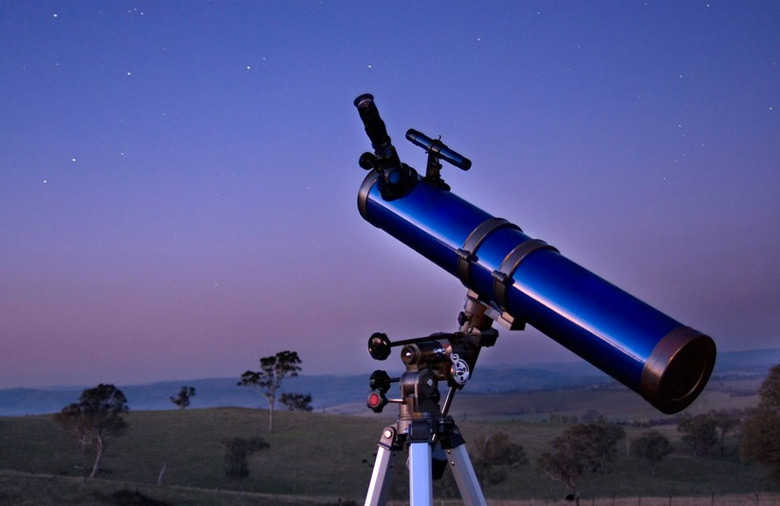
People have been studying outer space since ancient times. The only possible way of learning back then was observation: this is how Astronomy was born. In the information society era, NASA and ESA are most actively studying the Universe. They use different methods of collecting new data: from radio-optical observations to direct sending of space probes and devices to the places being studied.
Where to start learning astronomy? Of course, with the basics of theory. It is desirable that you have at least an amateur telescope with which you can observe stars and planets. If you have decided to study outer space, then I ask you to proceed further :)
Mini planets
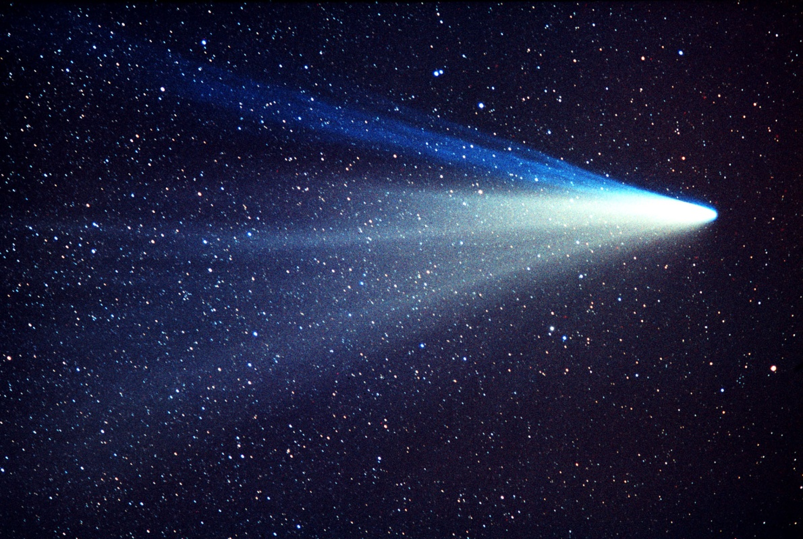
The vast outer space is filled with a variety of bodies. The smallest object visible to us in this space is cosmic dust. And, it would seem, why devote a topic to it at all? The fact is that the speed of these small playful dust particles is several thousand km / h. This is quite enough to cause "serious damage" to a person. But there are also larger celestial bodies, those that in some films become the cause of a global catastrophe: the fall of an asteroid to Earth in the minds of most people is already the end of the world. With their "tiny" size relative to cosmic scales, these celestial bodies pose a direct threat to the existence of humanity. Most of them are collected in the asteroid belt: between the orbits of Mars and Jupiter. The largest representative is Ceres (up to 1000 km in diameter)
I think it is necessary to single out comets, "small" celestial bodies revolving around the Sun in an elongated orbit, in a separate block. Their beauty is that when they approach our star at a very close distance, they form a bizarre tail consisting of dust and gas. Comets of the Solar System make up the huge Kuiper Belt - the outer shell of our stellar system. The most famous representative of these celestial bodies is Halley's Comet.
Planets
We all live on planet Earth - the paradise of the Universe. Until now, scientists have not been able to define this class of objects, but we will consider them an intermediate link between small celestial bodies and stars. There are 8 planets in our Solar System (before 2006 there were 9, since Pluto was also part of them)
Planets of the Solar System
| № |
Planet name |
Diameter (km) |
Distance to the Sun (in million km) |
Period of rotation around the axis |
Period of revolution around the Sun |
Type of planet |
Number of satellites |
Image |
| 1 |
Mercury |
4878 |
58 |
58,7 days |
88 days |
Solid |
0 |
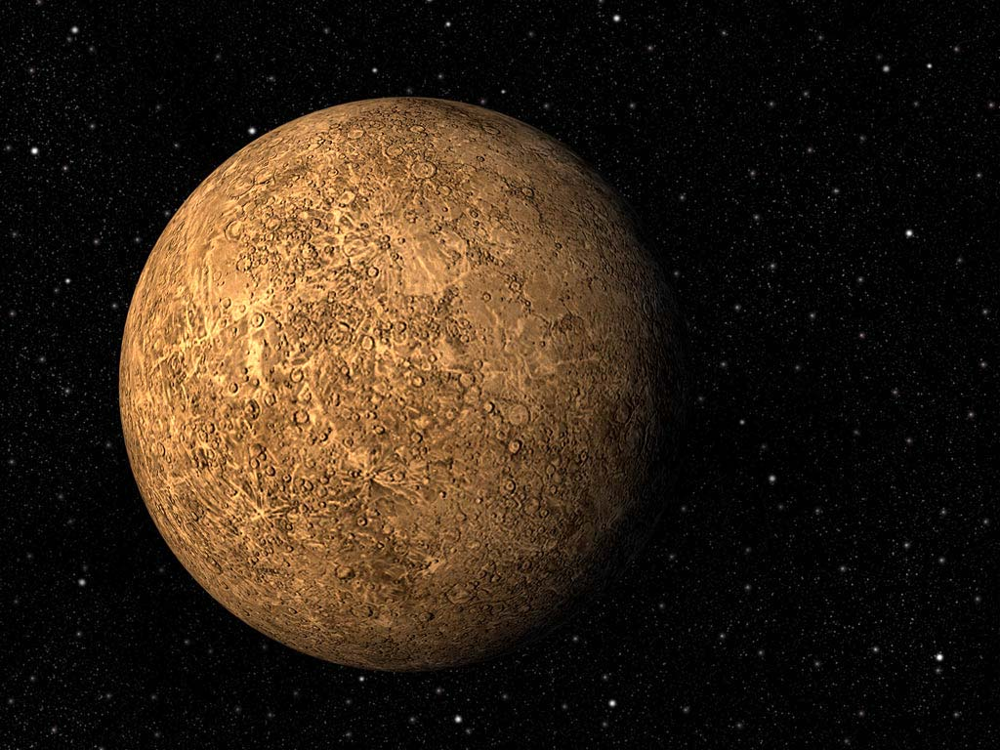 |
| 2 |
Venus |
12 102 |
108 |
243 days |
224,7 days |
Solid |
0 |
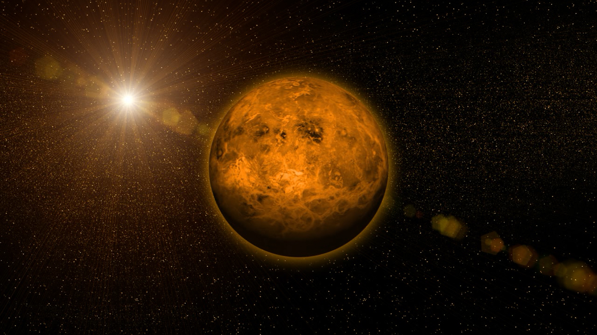 |
| 3 |
Earth |
12756 |
150 |
24 hours |
365,26 days |
Solid |
1 (Moon) |
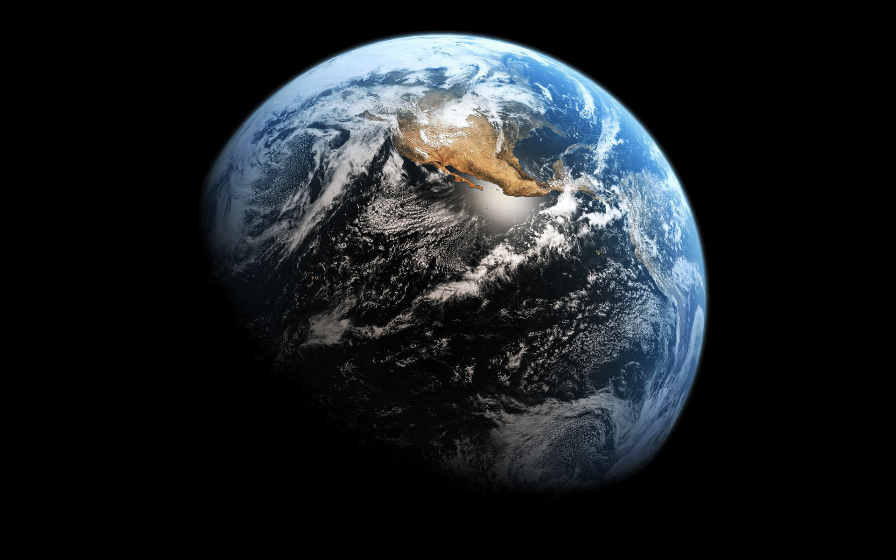 |
| 4 |
Mars |
6794 |
228 |
24 hours 37 minutes |
687 days |
Solid |
2 |
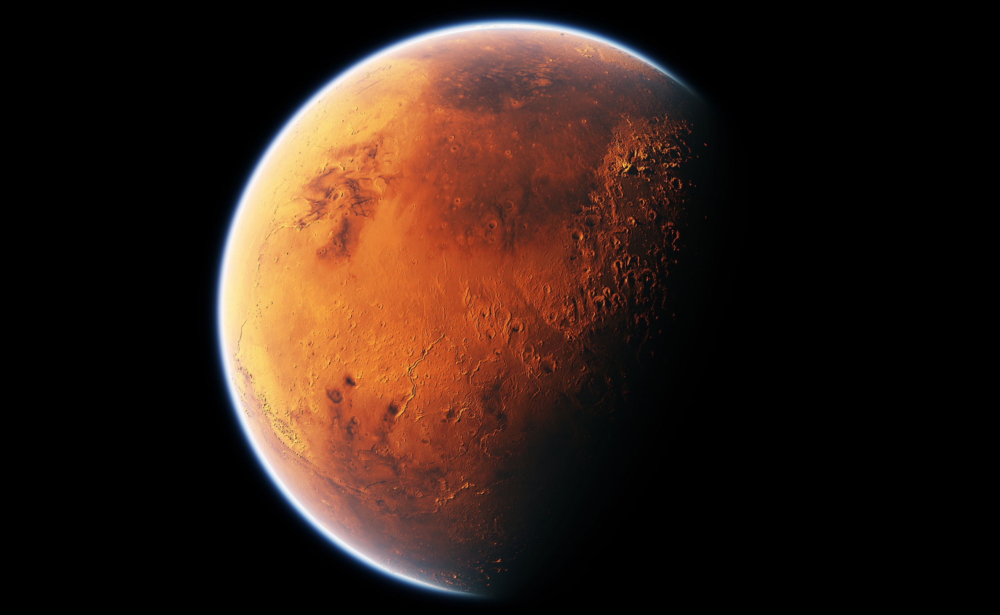 |
| 5 |
Jupiter |
142 800 |
778 |
10 hours |
11,86 years |
Gaseous |
69 |
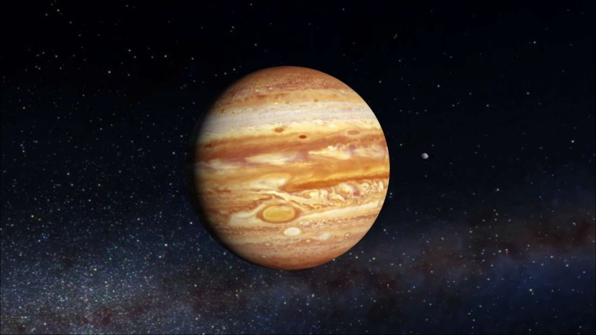 |
| 6 |
Saturn |
120 000 |
1 427 |
10 hours 40 minutes |
30 years |
Gaseous |
62 |
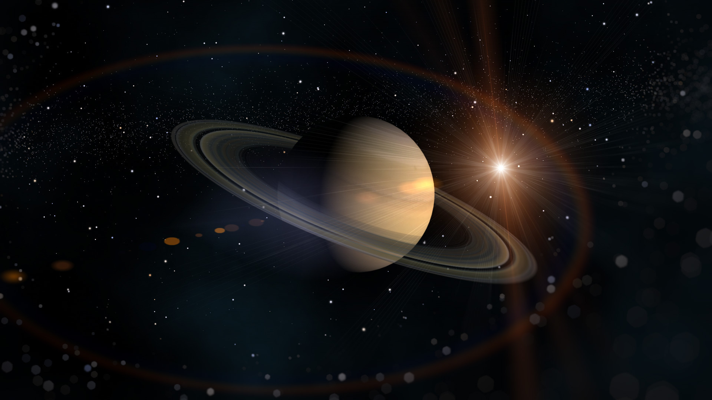 |
| 7 |
Uran |
51 800 |
2 869 |
17 hours |
84 years |
Gaseous |
27 |
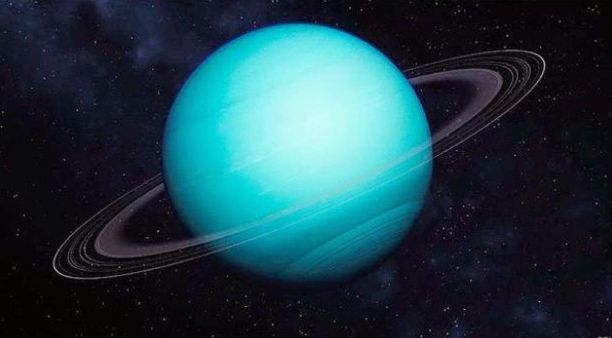 |
| 8 |
Neptun |
48 600 |
4 497 |
16 hours |
164,8 years |
Gaseous |
14 |
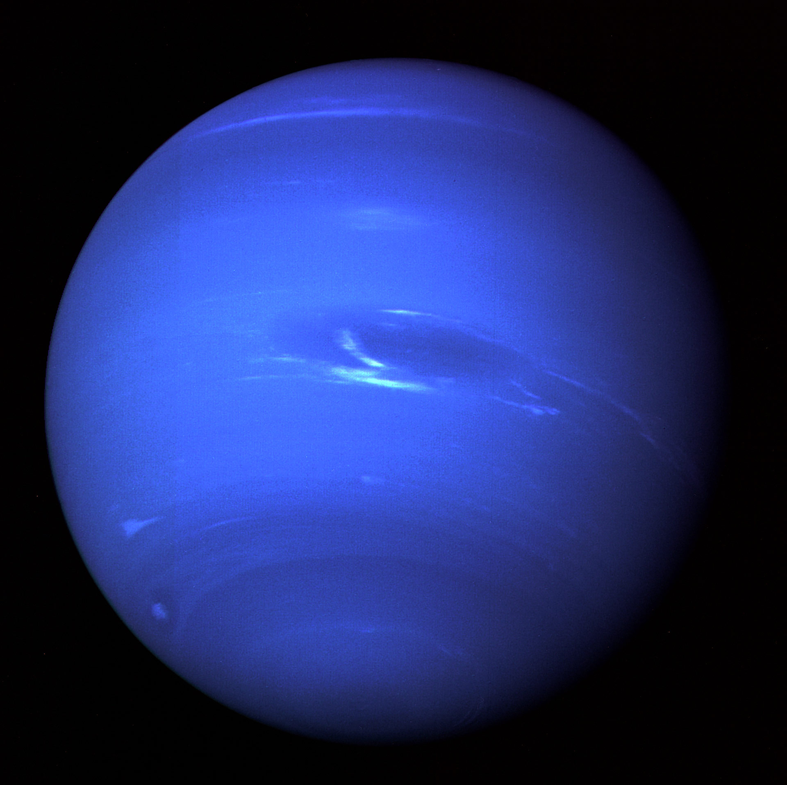 |
Stars
A star is a huge fireball with complex thermonuclear reactions taking place inside. Thanks to these processes, we can see the light of our Sun every day. There are a huge number of stars in the Universe, and it takes millions of years for the light from each of them to reach Earth. The distance between these celestial bodies is measured in light years. The closest neighbor to our Sun is Alpha Centauri (4.37 light years).

The huge variety of stars allows us to talk about their sizes. Here are the top 10 giant stars:
- UY Scuti (1708 solar radii)
- NML Cygni (1650 solar radii)
- RW Cephei (1636 solar radii)
- WOH G64 (1540 - 1730 solar radii)
- Westerland 1-26 (1520 - 1540 solar radii)
- VX Sagittarii (1520 solar radii)
- VY Canis Majoris (1300 - 1540 solar radii)
- VV Cephei A (1050 - 1900)
- KY Cygni (1420 solar radii)
- AH Scorpii (1287 - 1535 radii of our Sun)
Galaxies
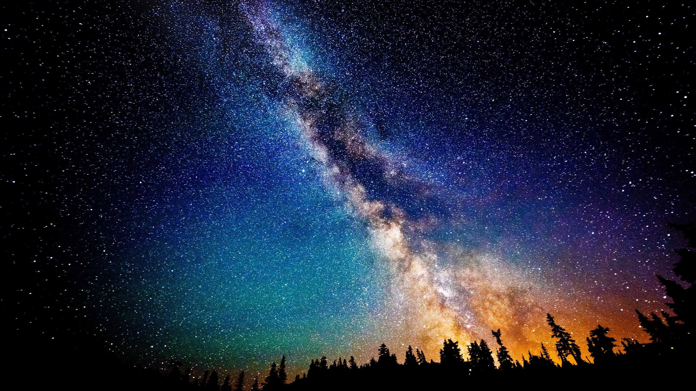
There are a lot of stars, and it would be crazy to assume that they just "float" in space. Therefore, we will introduce a new concept - Galaxies - huge star islands. They are a kind of framework of the Universe. Our galaxy is the Milky Way, consisting of more than 200 billion stars!
But we can finish here. Thank you for your attention.